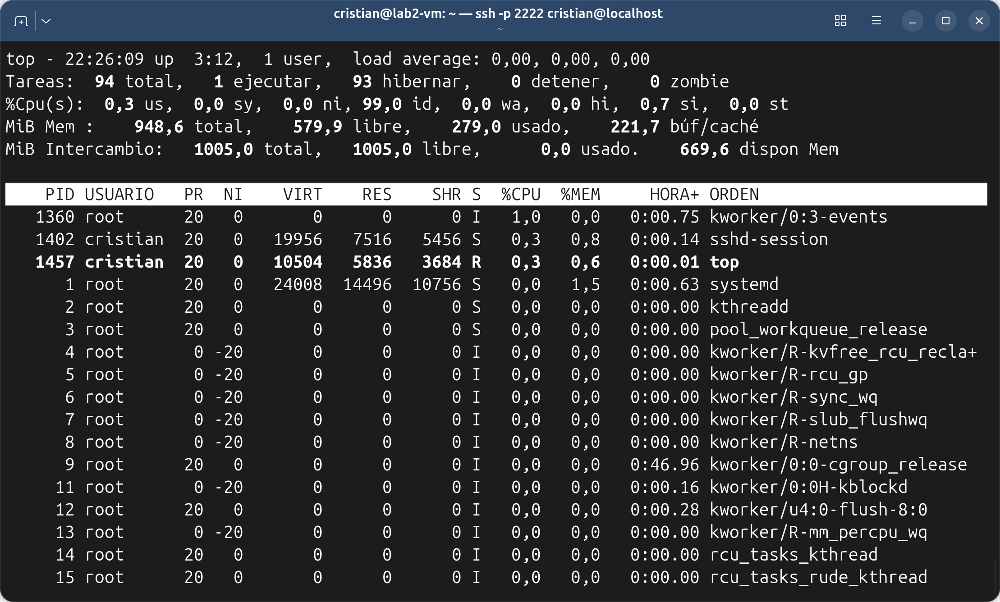
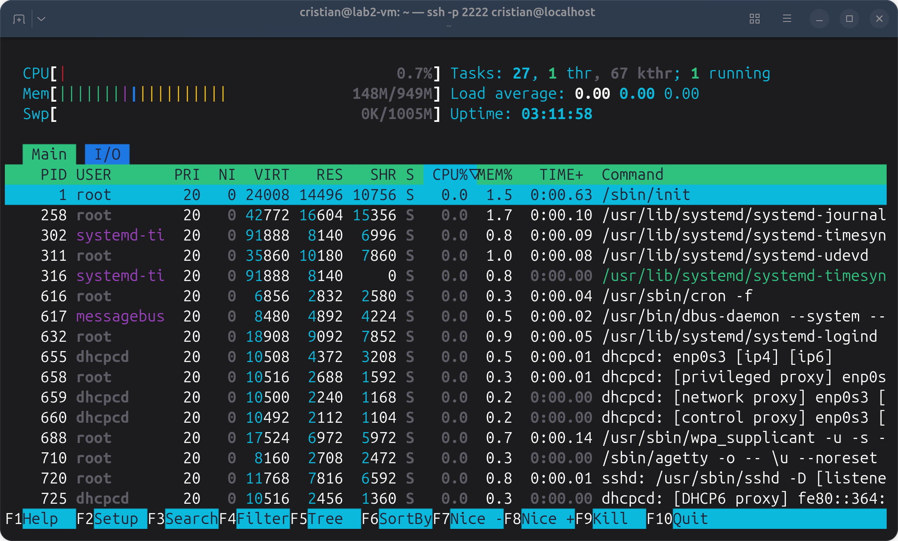

Administración de servidores GNU/Linux
Clase 10: Procesos y servicios
Módulo 1 — Operación de Sistemas Operativos GNU/Linux
Temas de la clase 10
Objetivos de la clase
Retomamos la clase 4
systemctl status ssh
systemctl is-enabled sshProcesos
Programa y proceso
| Dato | Para qué sirve |
|---|---|
| PID | Identificar el proceso; se usa con kill |
| Usuario | Saber con qué identidad corre |
| Comando | Saber qué programa es |
Jerarquía de procesos
pstree -p # árbol completo con PID
pstree -sp $$ # camino desde PID 1 hasta mi shellsudo apt install psmiscsystemd(1)───sshd(714)───sshd-session(890)───sshd-session(897)───bash(898)───pstree(…)ps: una foto del momento
ps -ef # todos los procesos
ps -ef | grep python # los que tienen «python» en su línea
ps -u cristian # procesos de un usuarioUID PID PPID C STIME TTY TIME CMD
root 1 0 0 22:39 ? 00:00:00 /sbin/init
root 714 1 0 22:39 ? 00:00:00 sshd: /usr/sbin/sshd -D …
cristian 810 788 0 22:39 ? 00:00:00 sshd-session: cristian@pts/0
cristian 812 810 0 22:39 pts/0 00:00:00 -bashConsumo en tiempo real
top

top: la cabecera
| Dato | Qué leer |
|---|---|
up 3:12 |
Tiempo encendido |
1 user |
Usuarios conectados |
load average |
Carga de 1, 5 y 15 minutos; se compara con la cantidad de CPU (nproc) |
Tareas |
Procesos por estado, incluidos los zombis |
%Cpu(s) |
us programas, sy kernel, id ocioso, wa espera de disco |
MiB Mem |
RAM total, libre, usada y en búfer/caché |
dispon Mem |
Memoria disponible: la que dice si falta memoria |
top: las columnas
| Columna | Qué indica |
|---|---|
| PID | Número del proceso |
| USUARIO | Con qué usuario corre |
| PR, NI | Prioridad del proceso |
| VIRT | Memoria que el proceso tiene reservada |
| RES | Memoria RAM que usa de verdad |
| SHR | Parte de RES compartida con otros procesos |
| S | Estado |
| %CPU | Porcentaje de CPU que usó en el último intervalo |
| %MEM | RES como porcentaje de la RAM total |
| HORA+ | Tiempo de CPU acumulado, no la hora del día |
| ORDEN | Comando |
top: la prioridad
| NI | Prioridad |
|---|---|
| -20 | La más alta: cuando varios compiten, recibe más CPU |
| 0 | La normal; casi todos los procesos tienen 0 |
| 19 | La más baja: cuando varios compiten, recibe menos CPU |
top: estados y teclas
| Estado | Lectura |
|---|---|
| R, S | Normal: ejecutando o esperando |
| Z | Zombi: ya terminó; mirar el proceso padre |
| D | Esperando disco: muchos, con carga alta, indican un problema de disco |
| Tecla | Acción |
|---|---|
P |
Ordenar por CPU |
M |
Ordenar por memoria |
u |
Mostrar un usuario |
1 |
Una línea por CPU |
q |
Salir |
htop

Terminar un proceso
¿Cómo obtengo el PID?
pgrep -a python # PID y comando de los procesos «python»
ps -ef | grep python # lo mismo, con usuario y más columnas
jobs -l # trabajos lanzados desde esta shell$ pgrep -a sleep
951 sleep 200
952 sleep 201
$ kill 951
$ pgrep -a sleep
952 sleep 201kill y killall
kill 1234 # pedir al proceso 1234 que termine
kill -9 1234 # forzarlo: último recurso
killall sleep # terminar todos los procesos llamados sleep¿Quién puede terminar qué?
| Proceso | Sin sudo | Con sudo |
|---|---|---|
| Propio | Sí | Sí |
| De otro usuario o de root | No: «Operación no permitida» | Sí |
Primer y segundo plano
Trabajos de la shell
sleep 300 & # segundo plano: [1] 1234
jobs # trabajos de esta shell
fg %1 # traer al primer plano| Acción | Efecto |
|---|---|
comando & |
Arranca en segundo plano |
Ctrl+C |
Interrumpe el de primer plano |
Ctrl+Z |
Suspende el de primer plano, sin terminarlo |
bg %1 |
Hace que el trabajo suspendido siga corriendo en segundo plano |
fg %1 |
Lo trae al primer plano |
Consultas
Servicios con systemd
Dos preguntas distintas
| Pregunta | Consulta | Se cambia con |
|---|---|---|
| ¿Corre ahora? | systemctl is-active X |
start, stop, restart |
| ¿Arranca con el sistema? | systemctl is-enabled X |
enable, disable |
Administrar un servicio
systemctl status X # consultar: sin sudo
sudo systemctl start X
sudo systemctl stop X
sudo systemctl restart X
sudo systemctl reload X # si el servicio lo admite
sudo systemctl enable X
sudo systemctl disable X
sudo systemctl enable --now X # habilitar e iniciarLeer systemctl status
● systemd-timesyncd.service - Network Time Synchronization
Loaded: loaded (/usr/lib/systemd/system/systemd-timesyncd.service; enabled; preset: enabled)
Active: active (running) since Sun 2026-09-27 22:39:23 -03; 9min ago
Main PID: 304 (systemd-timesyn)
Status: "Contacted time server 170.210.222.2:123 (2.debian.pool.ntp.org)."
CGroup: /system.slice/systemd-timesyncd.service
└─304 /usr/lib/systemd/systemd-timesyncd| Línea | Qué leer |
|---|---|
| Loaded | Dónde está la unidad y si está habilitada |
| Active | Si corre ahora y desde cuándo |
| Main PID | Proceso principal |
| CGroup | Procesos del servicio |
Qué corre y con qué usuario
systemctl list-units --type=service --state=running
systemctl --failed
systemctl cat systemd-timesyncdConsultas
Cuando un servicio falla
Diagnóstico inicial
Job for demo-falla.service failed because the control process exited with error
code.
See "systemctl status demo-falla.service" and "journalctl -xeu demo-falla.service"
for details.sudo journalctl -u X -n 20 # últimas 20 líneas
sudo journalctl -u X -f # seguir en vivo; salir con Ctrl+CApagado y reinicio
Apagado ordenado
sudo systemctl poweroff
sudo systemctl reboot
sudo shutdown -r +5 "Reinicio por mantenimiento"
sudo shutdown -cApagar la VM no es lo mismo
| En VirtualBox | Qué ocurre |
|---|---|
| Enviar señal de apagado | El sistema hace un apagado ordenado |
| Apagar la máquina | Equivale a cortar la alimentación |
Revisión mínima de un servidor
systemctl list-units --type=service --state=running
systemctl --failed
top
sudo ss -tlnp